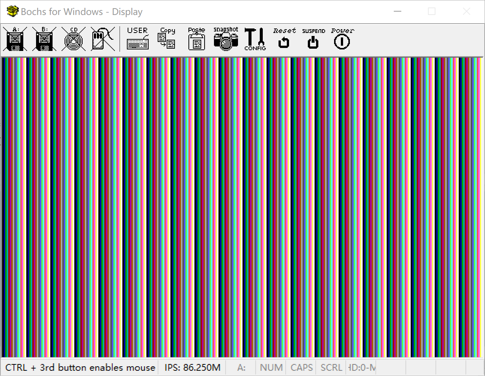

设置显示模式
图形模式
如果想要改变显示方式，你可以通过BIOS中断来设置显示模式。
参考BIOS中断大全，随便列出几个
1. 设置显示器模式
中断操作：INT 0x10，AH＝00H
| 寄存器 |
说明 |
值 |
| AH |
操作模式：设置显示器模式 |
00H |
| AL |
显示模式 |
|
AL = 显示模式值
见下表所示
| 寄存器值 |
分辨率 |
颜色域 |
显示模式 |
| 00H |
40×25 |
16色 |
文本 |
| 01H |
40×25 |
16色 |
文本 |
| 02H |
80×25 |
16色 |
文本 |
| 03H |
80×25 |
16色 |
文本 |
| 11H |
640×480 |
2色 |
图形 |
| 12H |
640×480 |
16色 |
图形 |
| 13H |
320x200 |
256色 |
图形 |
设置显示模式
接下来一步我们将设置从文本模式，变为图形显示模式
核心代码:
0xa0000 - 0xaffff
1
2
3
4
5
6
|
;----------------------------
;设置显示模式 320x200x256色
;----------------------------
mov ah, 0x0 ;VGA显示器模式
mov al, 0x13 ;320x200x256色
int 0x10
|
1
2
3
4
5
6
7
8
9
10
|
typedef unsigned char int8;
int _start(){
int8 *pvga = (int8 *)0xa0000; //填充到显示内存的初始地址
for(int i = 0;i <= 0xffff;i++){
*(pvga + i) = i & 0x0F; //显卡内存存填充颜色值
}
fin:
goto fin;
}
|
或者
0xe0000000-0xe00140000
1
2
3
4
5
6
|
;----------------------------
;设置显示模式 1280×1024*256色
;----------------------------
mov ax, 0x4F02 ;超级VGA显示器模式
mov bx, 0x107
int 0x10
|
仿照30天里面，制作彩条图形输出
1
2
3
4
5
6
7
8
9
10
|
typedef unsigned char int8;
int _start(){
int8 *pvga = (int8 *)0xe0000000; //填充到显示内存的初始地址
for(int i = 0;i <= 0x140000;i++){
*(pvga + i) = i & 0x0F; //显卡内存存填充颜色值
}
fin:
goto fin;
}
|
·
加载执行c语言程序的代码并执行
